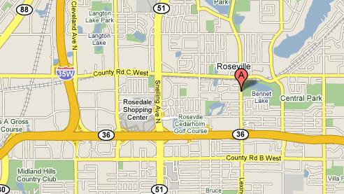

Course Description
The Central Race Walk Course is on the walking path around Bennett Lake, Central Park, Roseville, MN. This delightful loop course featuring 12 foot wide asphalt path that is flat, not crowned, pothole free, and has no sharp corners. This lightly used pathway has no automobile or truck traffic and no road crossings, but does cross a creek with a waterfall.
We use the north side of the lake to build a 1km loop - and ideal distance for shorter races.
The course will be certified before the April 12, 2008 race.
Course Amenities
Course Location, Directions, Map
Directions to the Course & Parking Take the Lexington Ave exit from US36 Turn north on Lexington Ave Before reaching County Rd C, park on the east side of the road. The lake is immediately east of the parking lot, and the course begins on the path next to the lake and goes clockwise around the north edge of the lake..
Regional Map - search for 2540 Lexington Ave N, Roseville, MN 
|
|
Copyright © 2009 by Twin Cities Race Walkers. All Rights Reserved Contact Webmaster if you have any issues or problems with this web site. |